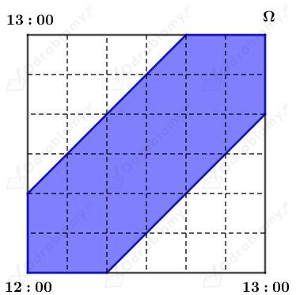
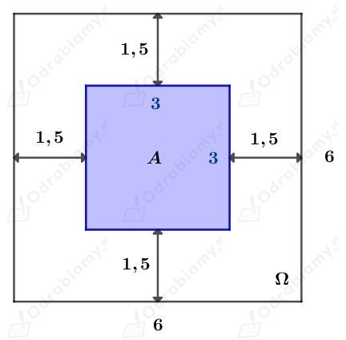
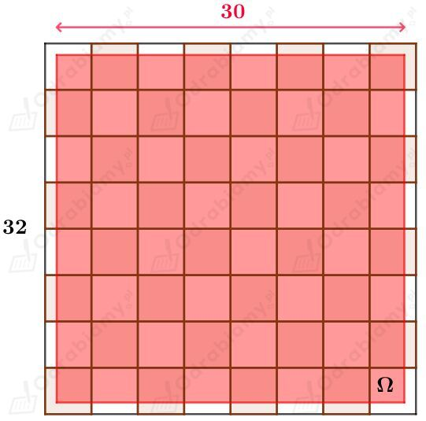
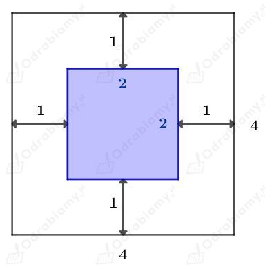

Na rysunku w podręczniku zaznaczono kwadrat Ω oraz figurę A.
Wyznaczmy pole kwadratu Ω. Mamy:
Wyznaczmy pole figury A. Pole niebieskiej figury A to różnica pola kwadratu Ω i dwóch trójkątów. Mamy:
Pole figury A jest równe 11.
| Prawdopodobieństwo geometryczne Na płaszczyźnie dane są figury A i Ω takie, że A⊂Ω. Niech PΩ będzie polem figury Ω, a PA - polem figury A. Przyjmijmy, że prawdopodobieństwo tego, że losowo wybrany punkt figury Ω należy do figury A, jest równe |
Czasy przybycia Ani i Zosi pod fontannę oznaczamy odpowiednio przez x i y. Rozpatrujemy punkty należące do kwadratu Ω.
Rysunek:

Ania i Zosia spotkają się, gdy punkt (x, y) należy do zbioru A zaznaczonego na niebiesko.
Wyznaczmy pole kwadratu Ω:
Wyznaczmy pole figury A:
Wyznaczmy prawdopodobieństwo spotkania. Mamy:
Odp. Prawdopodobieństwo spotkania Ani i Zosi wynosi 5/9.
| Prawdopodobieństwo geometryczne Na płaszczyźnie dane są figury A i Ω takie, że A⊂Ω. Niech PΩ będzie polem figury Ω, a PA - polem figury A. Przyjmijmy, że prawdopodobieństwo tego, że losowo wybrany punkt figury Ω należy do figury A, jest równe |
Na szachownicę utworzoną z kwadratów o boku długości 6 cm rzucamy monetę o średnicy długości 3 cm.
Rozpatrujemy kwadrat Ω, na który upadł środek rzuconej monety. Aby cała moneta znajdowała się wewnątrz tego kwadratu, to jej środek musi należeć do niebieskiego kwadratu A.
Rysunek:

Wyznaczmy pole kwadratu Ω:
Wyznaczmy pole kwadratu A:
Zatem prawdopodobieństwo tego, że moneta upadnie wewnątrz któregoś z kwadratów szachownicy wynosi:
Odp. Prawdopodobieństwo tego, że moneta upadnie wewnątrz któregoś z kwadratów szachownicy wynosi 1/4.
| Prawdopodobieństwo geometryczne Na płaszczyźnie dane są figury A i Ω takie, że A⊂Ω. Niech PΩ będzie polem figury Ω, a PA - polem figury A. Przyjmijmy, że prawdopodobieństwo tego, że losowo wybrany punkt figury Ω należy do figury A, jest równe |
Na szachownicę utworzoną z kwadratów o boku długości 4 cm rzucamy monetę o średnicy długości 2 cm.
Wiemy, że cała moneta znalazła się na szachownicy. Zatem figurą Ω nie będzie cała szachownica, tylko kwadrat zaznaczony na rysunku:

Wyznaczmy pole kwadratu Ω:
Rozpatrujemy jeden spośród 32 białych kwadratów, na który upadł środek rzuconej monety. Aby cała moneta znajdowała się wewnątrz tego kwadratu, to jej środek musi należeć do niebieskiego kwadratu A.
Rysunek:

Pole niebieskiego kwadratu wynosi 4 cm2.
Wyznaczmy pole obszaru A, czyli pole trzydziestu dwóch niebieskich kwadratów
Zatem prawdopodobieństwo tego, że moneta upadnie wewnątrz białego pola szachownicy wynosi:
Odp. Prawdopodobieństwo tego, że moneta upadnie wewnątrz białego pola szachownicy wynosi 32/225.